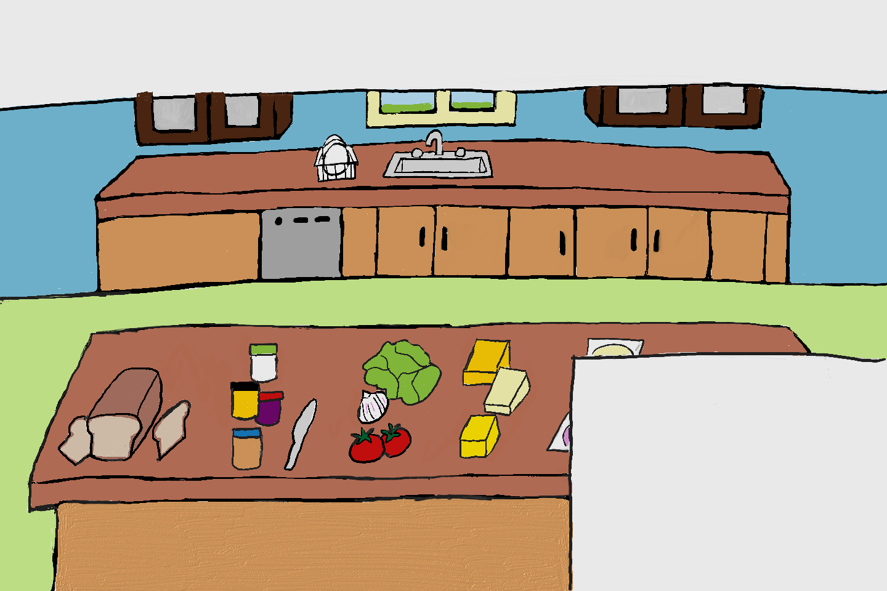

Hello! Welcome to How to Make a Sandwich! Lets stop loafing around and...
Lettuce Begin!
Luckily our kitchen is well stocked and has an eggselent selection of breads to form the base of your sandwich.
Hover over the bread to read about each slice.
An American classic, white bread is soft and fluffy. Its mild flavor make it an excellent compliment to almost anything you make, from french toast to a ham sandwich. Dont be ashamed to be white bread!
Dark and tangy, rye bread is rich in fiber, leaving you fuller longer. It also has less calories, so its a good option for those watching their waistline! Be warned! It has a stronger taste than most other grains, which some may find unappetizing!
100% whole grain bread is different in texture and taste to whole wheat and white bread. Compared to white bread, whole grain has more fiber, protein, and nutrients, making it a healthier alternative.
Known for its chewy exterior and soft crumb speckled with air holes, ciabatta is perfect for dunking into soup, slicing horizontally and making a sandwich, or for simply slathering with butter and eating until your heart’s content!
Click the button on the toaster to toast your bread.
SPREAD THE LOVE~
What spreads will you include on your sandwich?
Click on the spreads to choose.
Controversial, but delicious. This thick creamy sandwich will add another dimension of flavor to your sandwich.
Mustard is commonly paired with cheeses and cold meats (meaning it works wonderfully on a sandwich).
Spread some jelly on your sandwich for some sweetness, with just a bit of tart flavor! You jelly?
This creamy and sweet spread is made from crushed roasted peanuts, which is where it gets its name.
Its okay to be cheesy!
You know what to do~
While some may consider it a travesty, American cheese has a special place in our hearts, stomachs, and bowls of tomato soup. Much like the country itself, this ‘cheese’ is a blend of many cheeses and was originally white.
Definitely the hottest cheese around. Semi-soft pepperjack is like Monterey Jack (the original American Cheese), but with a bit more heat.
The North American answer to Emmental, this semi-hard cheese has a mild, nutty flavour. Known for its holes, what it lacks for in substance it more than makes up for in flavor!
Mozzarella originated in Southern Italy and is traditionally made from Italian water buffalo milk. This mild and tender cheese is best fresh, purchased warm, and never place in the refrigerator.
In order to have a well balanced meal,
you need your veggies!
A superfood disguised as a simple sandwich ingredient. Tomatoes are nutrient dense and yummy!
These wont make you cry, we promise! They will add some crunch and a bit of bite to your sandwich. Just make sure to brush after words. These babies are raw!
You need to add some leafy greens to this sandwich! Filling and nutritious, pick romaine over iceberg!
In order to have a satisfying meal, you need protein. Get creative!
Compared to red meats, chicken is a great source of protein, on top of being low in cholesterol and saturated fat. Dont be a chicken! Make yourself a chicken sandwich now!
Because why not? Another American icon, marshmallow fluff has been the ultimate comfort food for a century now. Initially created to be a quick frosting or candy base, this classic spread is most commonly used in the fluffernutter sandwich, comprising of white bread, peanut butter, and marshmallow fluff. Treat yourself, you deserve it.
Whether you want to get rid of Thanksgiving leftovers or you want a healthier, but still tasty alternative to red meats, turkey is a delicious choice to have on any sandwich. It contains more protein than any other meat and is low in fat.
Add some ham and you got yourself a lunch box staple. Its also got a long history, as one of the earliest recorded sandwiches in existence, originating on the streets of London. Add what you want on top, there are endless variations to this ever popular sandwich.
CONGRATULATIONS! We hope you enjoyed your How to Make a Sandwich experience!
BON APETIT!